SNR y Calibraciones
La clase de astronomía como análisis de datos: cuándo creerle a una señal. Pasamos del método científico (hipótesis falsificable, Bayes) a la estadística del fotón (binomial → Poisson, ), a la señal a ruido y su crecimiento con el tiempo, y al trabajo «sucio» de la observación: reducir (bias y flat), calibrar en flujo y longitud de onda, hacer espectroscopía y astrometría, y corregir la atmósfera.
¿Cuándo decimos que «hay» algo en una imagen? Esta clase es la bisagra entre tomar datos y hacer ciencia con ellos. La sigla que la atraviesa es SNR (signal-to-noise ratio, señal a ruido): la pregunta de fondo es siempre cuánto le creemos a un resultado. Para responderla, el profesor arma una cadena que a un ingeniero/informático le resulta familiar: un fenómeno binario (un fotón excita o no excita un sensor) genera estadística de conteo (Poisson), de ahí sale el ruido , y de ahí la confianza en sigmas. Lo demás —bias, flat, filtros, estándares, gratings, airmass— es el pipeline que convierte voltajes en watts por metro cuadrado y posiciones confiables en el cielo. La próxima clase incluirá una experiencia práctica observando con el telescopio GOTO de Cerro Calán.
Ciencia: hipótesis falsificable y Bayes
Antes de hablar de ruido, hay que recordar para qué tomamos datos: para tratar de estar equivocados.
El profesor parte con una idea contraintuitiva: en ciencia uno anda buscando estar equivocado. El método científico propone una hipótesis (un modelo) y diseña un experimento que pueda falsificarla. Si el experimento «sale bien» y solo confirma lo que ya creíamos, no aprendimos nada nuevo; lo interesante ocurre cuando el resultado es distinto de lo esperado. La anécdota que cuenta —alguien que borró de su muestra una estrella «fea» que no calzaba con el diagrama de Hertzsprung–Russell, y resultó ser un tipo nuevo de estrella azul pulsante— es una advertencia: descartar lo que no encaja puede ser tirar a la basura el descubrimiento.
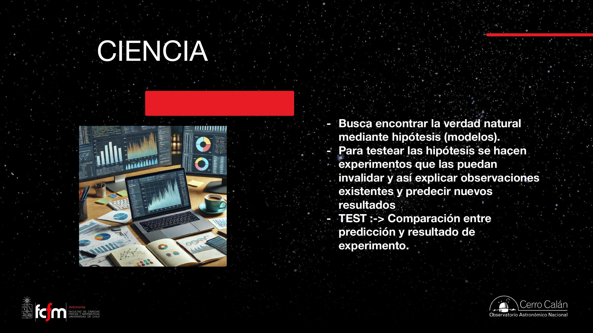
Esta comparación es inherentemente estadística: no preguntamos «¿es cierto el modelo, sí o no?», sino con qué probabilidad los datos son consistentes con él. Aquí aparece el teorema de Bayes (atribuido a Thomas Bayes, ministro/clérigo del s. XVIII; en la clase se dijo «monje de la Edad Media», lo cual es un desliz que conviene corregir). Permite invertir la pregunta fácil por la difícil:
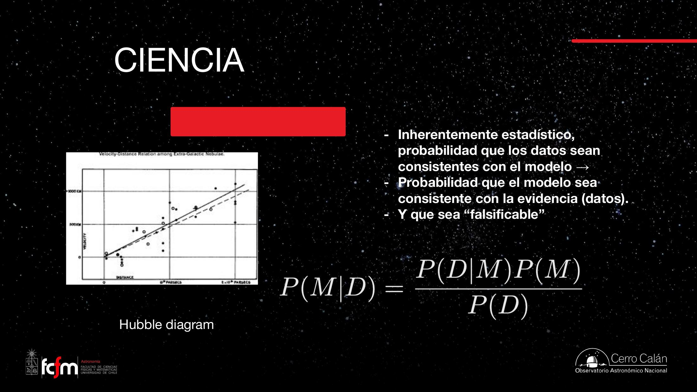
Bayes es el motor de casi todo el ML probabilístico: prior × verosimilitud → posterior. La verosimilitud es lo que maximizas al ajustar un modelo (MLE); el prior es la regularización. Y «experimento falsificable» es exactamente un test de hipótesis: defines un estadístico y rechazas solo si el dato cae en una región suficientemente improbable bajo el modelo nulo.
Qué medimos: tipos de datos
Imágenes, contornos de radio, espectros: distintos «sabores» de luz, todos hechos de fotones contados.
En astronomía se mide un sinnúmero de variables. El profesor recorre los tipos de datos más comunes:
- Imágenes en color: no salen de un sensor RGB. La cámara astronómica tiene un solo sensor (su prioridad es captar la máxima cantidad de luz). El color se construye tomando la misma zona con varios filtros (rojo, verde, azul…) y combinándolos después. «Todos los datos son falsos» en ese sentido —también los de nuestros ojos: son una representación.
- Contornos de radio: esas líneas de nivel superpuestas se obtienen apuntando una antena con cierto beam (la zona del cielo que promedia), barriendo punto a punto y mapeando la intensidad recibida, como un plano de alturas de señal.
- Espectros: separar la luz —el «arcoíris»— y contar fotones ordenados por longitud de onda / energía / frecuencia.
- Rayos X: se ven distinto; cada técnica deja una «firma» de cómo se tomó el dato.
Decir «aquí hay una galaxia» o «aquí hay una estrella» es, en el fondo, afirmar que en ese píxel la señal supera al ruido. Y observar hoy es distinto que hace 20 años: ya casi no se «trasnocha» frente al telescopio; uno manda un script y recibe los datos en días. Además, archivos como los del Hubble y el James Webb se vuelven públicos (típicamente tras ~6 meses), de modo que cualquiera puede bajar y reanalizar esos datos.
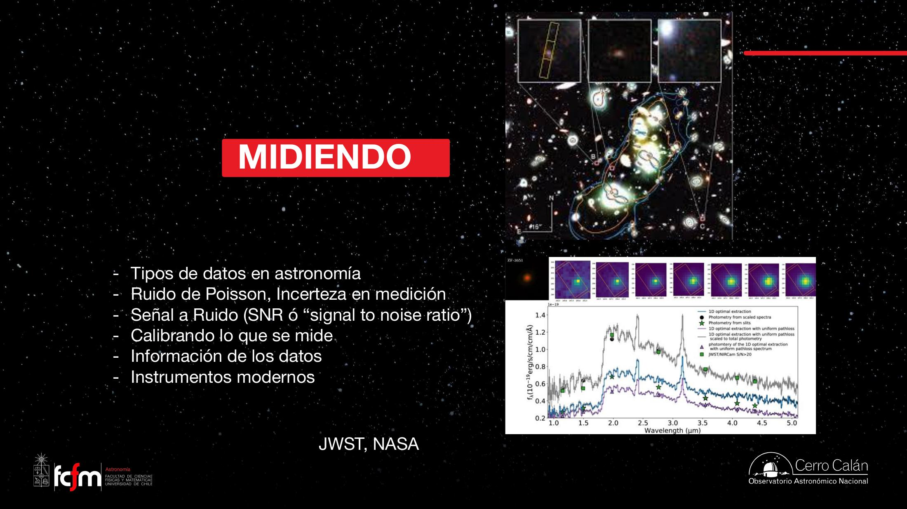
La próxima clase tendrá una experiencia observacional: se compartirán datos tomados por los propios estudiantes con el telescopio GOTO de Cerro Calán (clima permitiendo). El objetivo es que prueben qué significa calibrar y encontrar una señal, al nivel que cada quien quiera: a ojo, con Excel, o programando con herramientas de análisis de datos.
Contar fotones: energía y flujo
Toda medición de brillo se reduce a contar fotones y convertir cuentas en energía por unidad de área.
El detector hace lo mismo siempre: un fotón llega, por efecto fotoeléctrico arranca un electrón, y esa minúscula carga se amplifica y se lee como un voltaje. Ese voltaje se transforma en cuentas (número de eventos). Para pasar de «cuentas» a algo físico necesitamos la energía de cada fotón:
Y la irradiancia o flujo que recibimos combina el conteo de fotones, su energía y el área colectora:
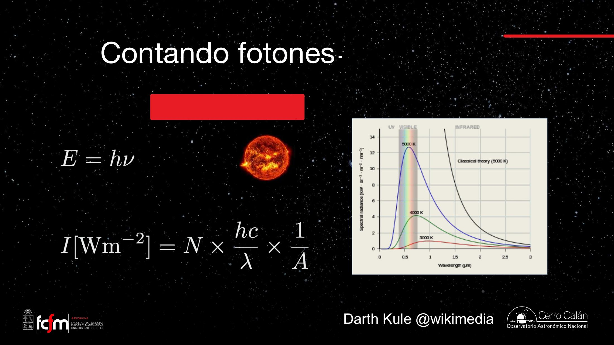
El profesor liga esto a un caso de frontera: los espectros de atmósferas de exoplanetas. El método consiste en medir el espectro de la estrella sola y luego durante el tránsito del planeta; la diferencia (la «profundidad del tránsito» en función de ) revela qué moléculas hay en la atmósfera. Pero la señal es diminuta y muy ruidosa: cada punto trae su barra de error (la incerteza ), y a menudo «casi toda la señal» de una banda depende de uno o dos puntos. La pregunta vuelve a ser la misma: ¿le creemos?
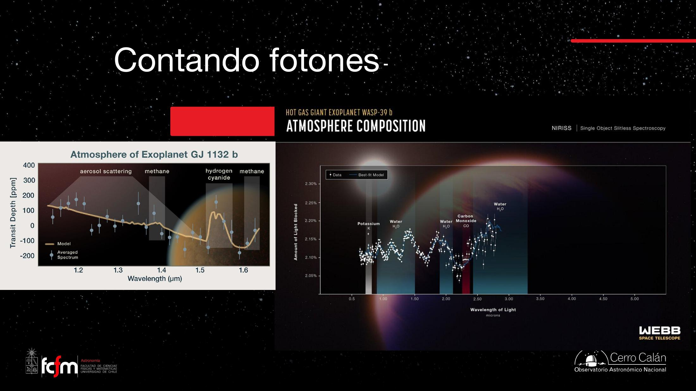
Estadística: del sí/no a Poisson
Un fotón excita o no excita el sensor. Esa moneda repetida millones de veces da Poisson, y con ella el ruido.
Casi toda la estadística de detección se basa en un evento binario: ¿el fotón excitó o no al sensor? Es el experimento de Bernoulli (una moneda con probabilidad de «cara»). Si lanzamos veces, la probabilidad de obtener exactamente «caras» es la distribución binomial:
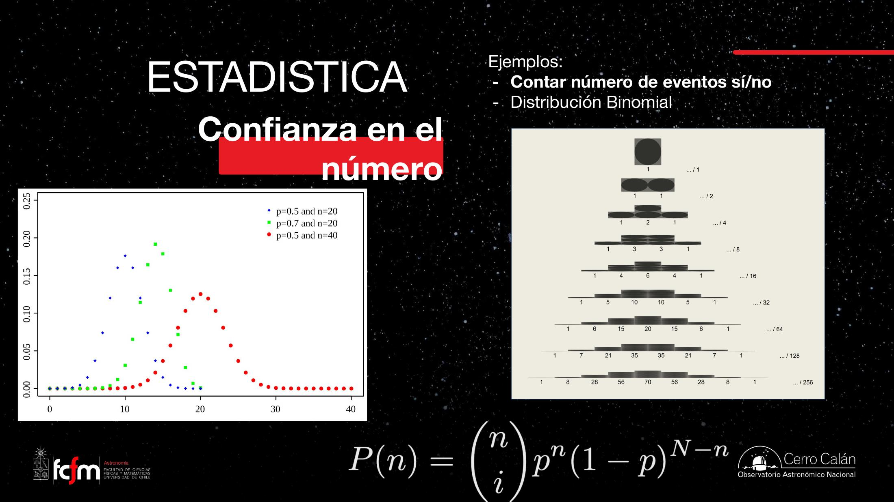
En astronomía el régimen típico es muchísimos fotones y baja probabilidad por evento: , , manteniendo finito el promedio . En ese límite la binomial se convierte en la distribución de Poisson (que además evita calcular factoriales gigantes, imposibles para de millones):
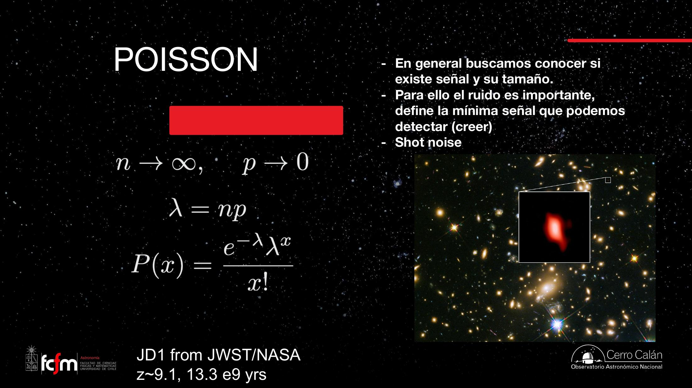
La propiedad estrella de Poisson, y la razón de que domine la astronomía: su desviación estándar es la raíz de su media.
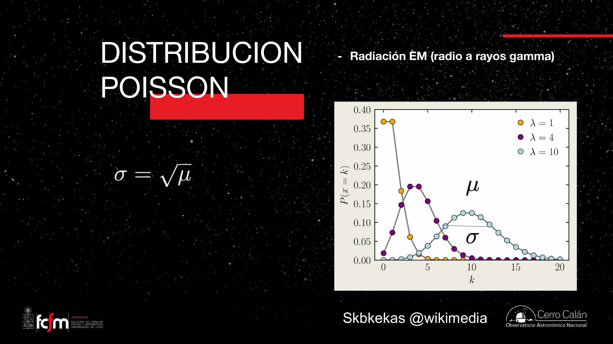
El shot noise es el límite fundamental de cualquier sensor que cuenta cuantos (cámaras, fotodiodos, contadores Geiger). No se puede «filtrar»: es la física del conteo. Por eso, para mejorar la SNR no hay magia de software —hay que juntar más fotones. Y como el error relativo va como , hay rendimientos decrecientes: pasar de 100 a 10 000 cuentas (×100) solo mejora la SNR ×10.
Señal a ruido y tiempo de integración
La SNR real suma varias fuentes de ruido en cuadratura, y crece como la raíz del tiempo.
El shot noise no es el único ruido. Una imagen «de nada» ya trae señal espuria: el ruido de lectura () de la electrónica, un fondo () del cielo y del instrumento, efectos térmicos, etc. Todos se suman en cuadratura (como varianzas independientes). La ecuación de SNR para fotometría —«la última fórmula fea», promete el profesor— es:
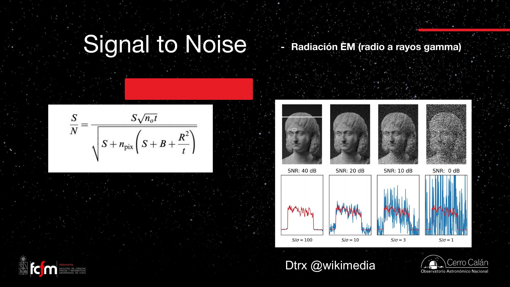
Lo más útil para planificar una observación es el régimen dominado por la fuente: la señal crece lineal con el tiempo (), su ruido como , así que la SNR crece como la raíz del tiempo:
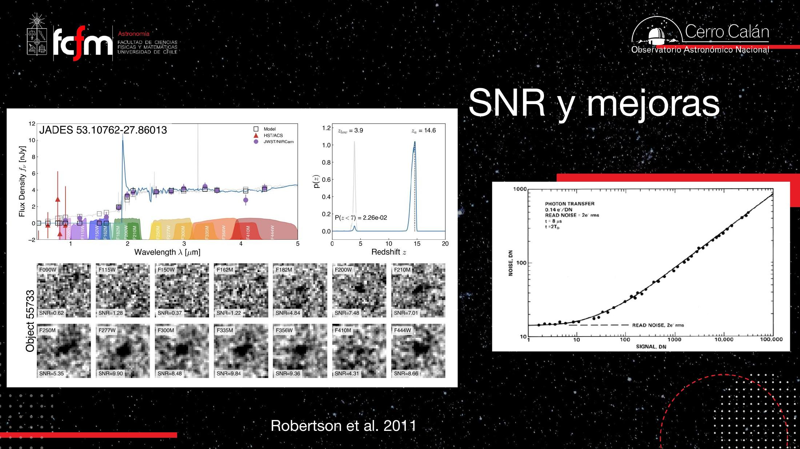
¿Cuándo creer? Sigmas y el Higgs
Una detección «de verdad» exige que el exceso esté a varias sigmas del fondo esperado.
Si esperamos «100 ± 10» (es decir ) y medimos 120, estamos a 2σ; si medimos 130, a 3σ. ¿Cuánto basta para creer? Para una distribución gaussiana, el área bajo la curva da las probabilidades de quedar dentro de un rango:
| Rango | Cobertura aprox. | Queda afuera |
|---|---|---|
| ±1σ | ~68 % | ~1 de cada 3 |
| ±2σ | ~95 % | ~1 de cada 20 |
| ±3σ | ~99,7 % | ~1 de cada 370 |
| ±5σ | ~99,99994 % | ~1 en ~1,7 millones |
Por eso el estándar de oro en física para «declarar descubrimiento» es 5σ. El profesor lo ilustra con el bosón de Higgs (que puso en el examen de calificación de doctorado): en un acelerador se hacen chocar partículas, se reconstruye la energía de lo que sale por conservación de energía y momentum, y se busca un exceso de eventos a cierta energía (~125 GeV). El «cachito» sobre el fondo es la señal; dónde se ponga la línea de fondo cambia cuánto sobresale.
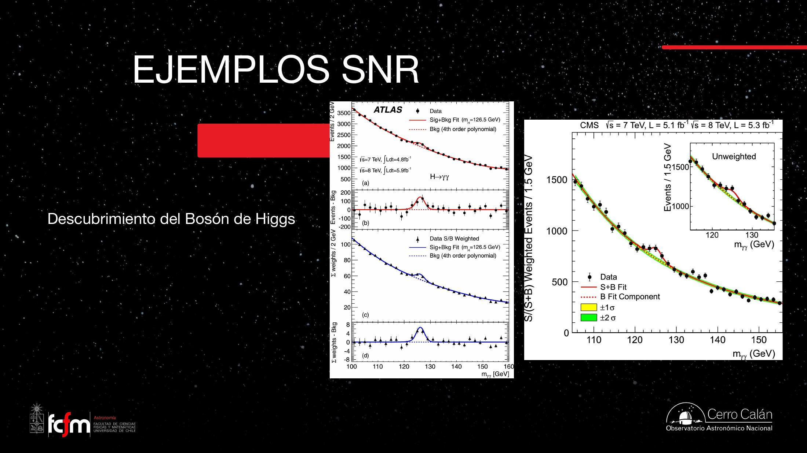
El profesor recuerda la moda de «buscar mensajes ocultos en la Biblia» (tomar cada N letras): apareciendo «Hitler», fechas, etc. Es puro azar: si buscas un patrón improbable suficientes veces, lo encontrarás por casualidad. Eso es exactamente «el ruido al que tratamos de vencer». En estadística se llama el problema de las comparaciones múltiples (o look-elsewhere effect): cuantas más hipótesis pruebas, más falsos positivos esperas.
Detectores: eficiencia cuántica
No todos los fotones se detectan. La eficiencia cuántica dice qué fracción se convierte en señal.
La eficiencia cuántica (QE) de un detector es la fracción de fotones que efectivamente produce una cuenta, en función de la longitud de onda. Importa porque define cuánta señal —y por tanto cuánta SNR— obtienes para una fuente dada. El ojo humano está muy bien adaptado al peak de la luz solar (verde), pero su QE es bajísima comparada con los detectores modernos. Un CCD (Charge-Coupled Device) puede llegar cerca del 90–100 % en parte del rango; muy por encima de la placa fotográfica o el tubo fotomultiplicador.
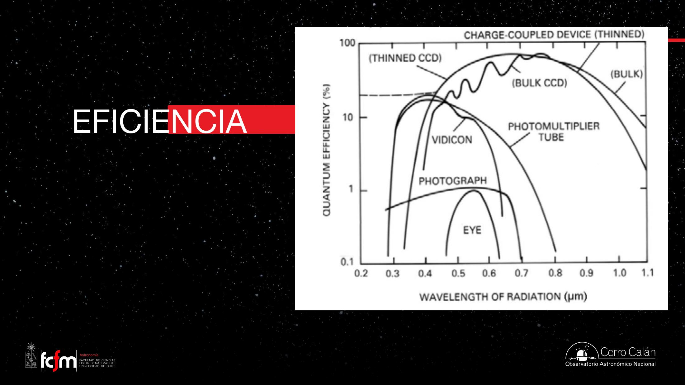
La QE es la «ganancia óptica» del sistema antes de cualquier procesamiento. Subir QE mejora la SNR en la fuente, que es siempre más barato que intentar recuperar señal por software después (recuerda: el shot noise no se filtra). Es el mismo principio de «mejorar el sensor antes que el postproceso» en cualquier pipeline de adquisición.
Reducción: bias y flat
Antes de medir hay que limpiar el instrumento de la imagen. Eso es «reducir» los datos.
Una imagen cruda es un arreglo de números (p. ej. 0–1024 en X y en Y). Reducir los datos es el proceso de convertir esos números en algo físico y limpio. Antes uno reducía «a mano» durante meses; hoy es cada vez más común que el telescopio entregue una pipeline con los datos ya reducidos (aunque para trabajo de frontera uno suele escribir su propia pipeline). Las dos correcciones más importantes en un CCD son bias y flat:
Cómo se lee un CCD
El CCD es una grilla de «baldes» (píxeles) que acumulan carga (electrones) según los fotones que caen. Para leerlos, se desplaza la carga aplicando voltajes que la empujan fila por fila hacia un amplificador, donde se mide el voltaje. Es como una cinta transportadora de cargas sincronizada por el reloj del instrumento. Por eso a veces se ven imágenes «partidas por la mitad»: hay dos amplificadores con ganancia distinta.
Bias: el ruido electrónico de base. Se mide leyendo la cámara tapada y con 0 s de exposición (mueves la carga aunque no haya carga real). Ese patrón se resta a las imágenes. Flat: corrige que cada píxel tenga distinta sensibilidad y la iluminación no sea uniforme. Se toma una imagen de una pantalla blanca uniforme (las manchitas no aparecen porque está muy fuera de foco); luego se divide la imagen por el flat. Hay un efecto que no se corrige: cuando un píxel se satura, la carga «se desborda» a sus vecinos (blooming o «sangrado»), dejando rayas en las columnas. El máximo medible lo fija el rango dinámico de la cámara.
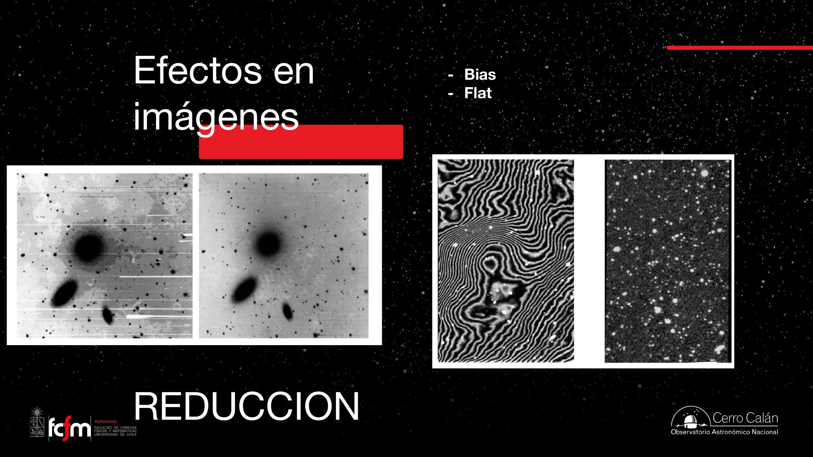
Reducir es invertir el modelo del instrumento: , así que . Bias es un offset aditivo; flat es una ganancia multiplicativa por píxel. Es exactamente la calibración «zero/gain» de cualquier sensor: restar el offset, dividir por la respuesta.
Calibración fotométrica: filtros y estándares
Para saber cuánta energía recibimos de verdad, comparamos con estrellas de brillo conocido.
Un filtro es un vidrio «pichicateado» (con moléculas añadidas) que deja pasar solo cierto rango de longitudes de onda, con una respuesta del 0 al 100 %. Los sistemas de filtros están estandarizados (Johnson-Cousins UBVRI, SDSS u g r i z, etc.) justamente para que distintos telescopios puedan compararse. El profesor destaca el sistema SDSS (Sloan Digital Sky Survey), el primer gran survey que «mira todo el cielo» y cuyos filtros se volvieron casi un estándar de facto.
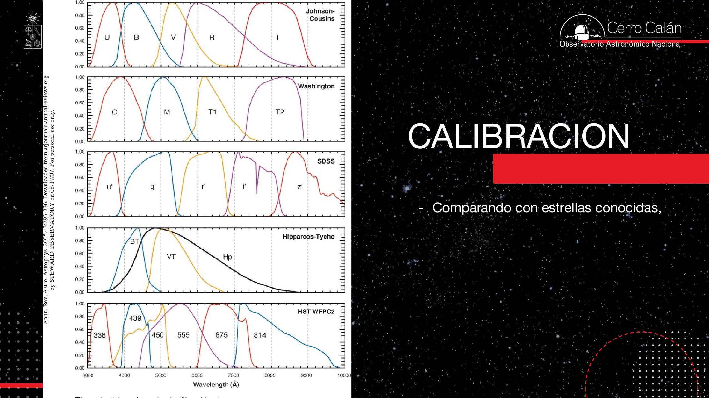
Como observamos a través de la atmósfera (que absorbe y enrojece de forma variable), la única manera de saber el flujo real es comparar con estrellas estándar: estrellas muy bien estudiadas, de magnitud y color conocidos en cada filtro. La clave es observar la estándar en condiciones similares a la fuente de interés —misma zona del cielo y, sobre todo, similar cantidad de atmósfera (air mass)—. Por eso se toman estándares al principio de la noche y cada ~2 horas. Hoy hay cada vez más estándares, porque los propios datos acumulados sirven para calibrar.
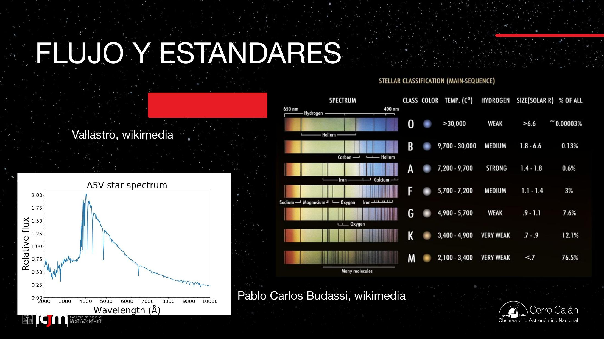
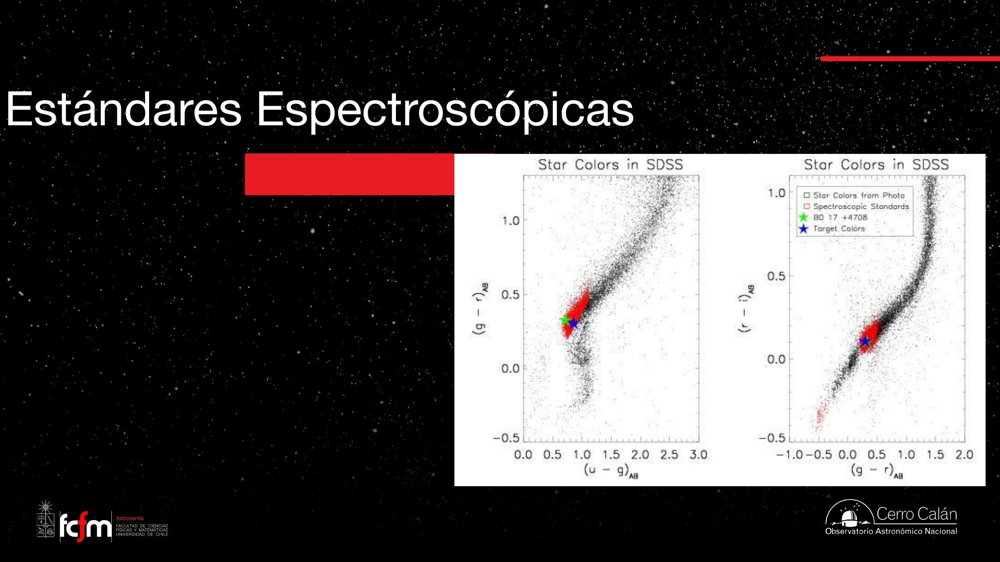
Espectroscopía: separar la luz
De un slit y un grating al cubo de datos: distintas formas de dispersar la luz en colores.
Hacer un espectro es separar la luz por longitud de onda y proyectarla sobre una cámara. Para que el espectro no se mezcle con el de fuentes vecinas, se usa un slit (una rendija): cuanto más angosta, mejor se separan las longitudes de onda, pero menos luz entra (hay que integrar más para mantener la SNR). La dispersión la produce un grating (red de difracción): una placa con surcos finísimos que mandan cada color a un ángulo distinto. El profesor lo compara con la mancha de aceite sobre agua: una capa de espesor comparable a separa los colores por interferencia.
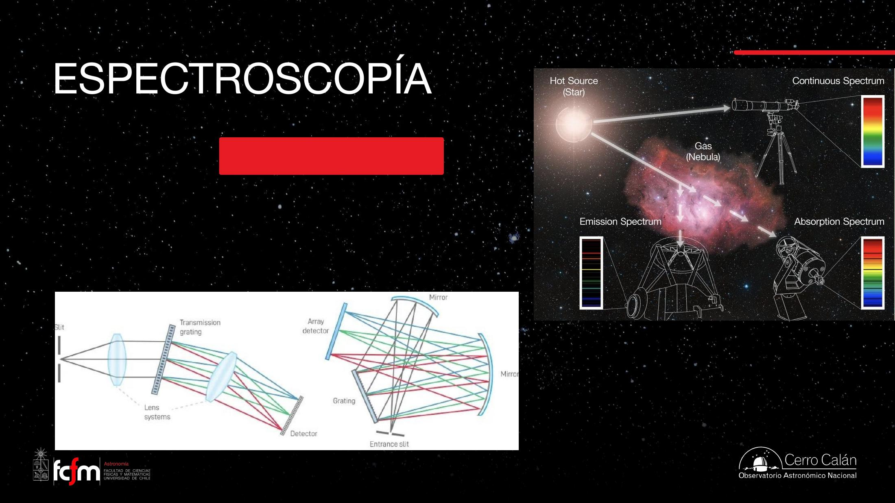
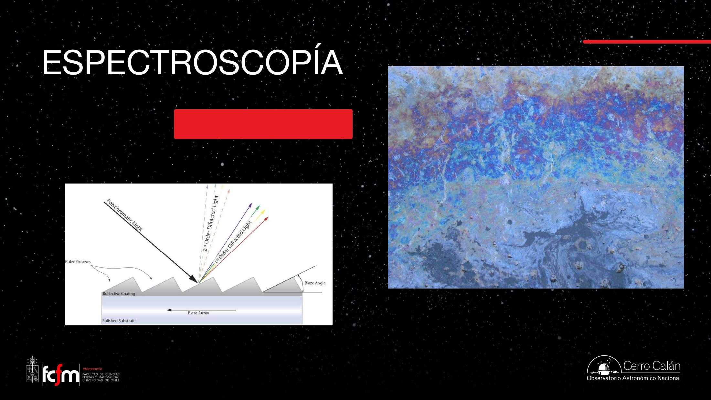
La técnica más sofisticada que menciona es la IFU (Integral Field Unit): en vez de tomar el espectro de un solo punto, se cubre una región (con un haz de fibras ópticas o microlentes) y se obtiene un espectro por cada parte de la imagen. El resultado es un cubo de datos: dos ejes espaciales (X, Y) y un tercer eje en longitud de onda. Ideal para objetos extendidos como galaxias.
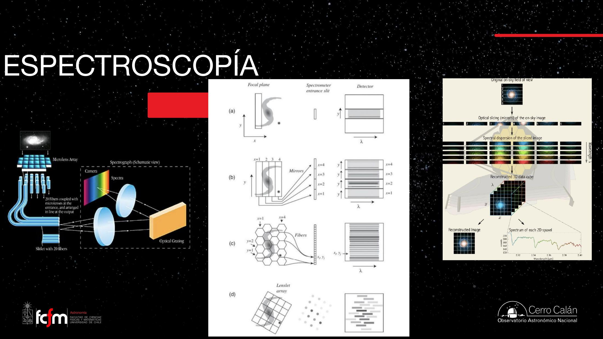
Un cubo IFU es un tensor , idéntico en estructura a la imagen hiperespectral de teledetección o a un volumen de video (alto × ancho × canales). Puedes «cortarlo» en imágenes monocromáticas (un fijo) o extraer el espectro de un píxel. El trade-off slit angosto ↔ menos luz es el mismo compromiso resolución vs. SNR de siempre.
Calibración en longitud de onda
Un espectro crudo está en píxeles. Hay que decir qué longitud de onda es cada píxel, y cuánto flujo trae.
Tras dispersar la luz, el detector entrega posiciones en píxeles, no en angstroms. Calibrar en longitud de onda requiere referencias de longitud de onda conocida. La fuente natural son las líneas telúricas: emisiones del propio cielo nocturno (sodio, nitrógeno, etc.) a longitudes de onda muy precisas. Si una línea conocida cae en cierto píxel, ese píxel «vale» esa longitud de onda. También se usan lámparas de gases (argón, mezclas) que producen líneas de referencia, y técnicas modernas con láser para inyectar una calibración en el mismo dato.
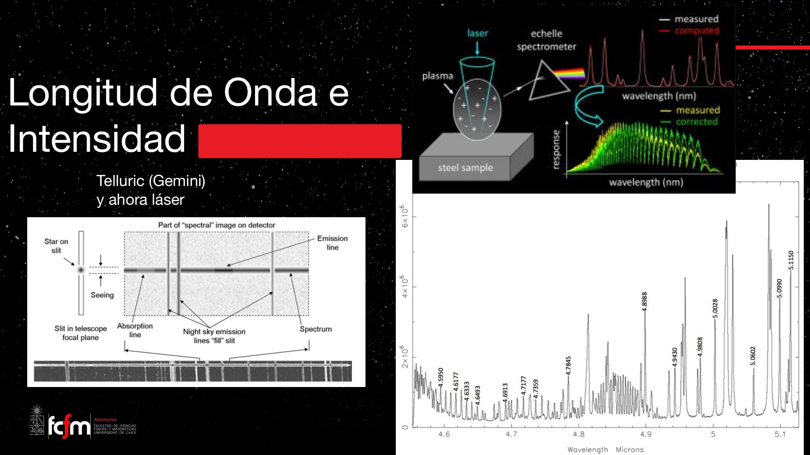
Aparte está la calibración en flujo/intensidad: convertir cuentas en energía por unidad de área (watts/m²), usando estándares espectrofotométricos. La diapositiva final de calibración muestra que esto aplica también fuera del visible: en rayos X, donde los fotones son escasos, se mide la energía fotón a fotón y se arma un histograma —otra vez, una distribución espectral construida contando eventos.
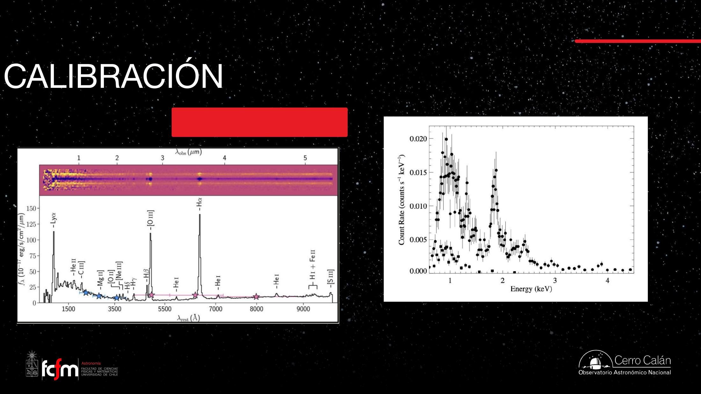
Astrometría
Saber dónde están las cosas en el cielo: alinear la imagen con un catálogo y medir posiciones precisas.
La astrometría es asignar coordenadas celestes (en grados) a las posiciones en píxeles (X, Y) de la imagen. No es trivial a ojo: las imágenes pueden estar rotadas o invertidas según el diseño del telescopio. El método más eficiente es por patrones de triángulos: se buscan triángulos de estrellas en la imagen que coincidan (por sus ángulos) con triángulos del catálogo de referencia. Una vez emparejados, se calcula la transformación (escala, traslación, rotación y, si hace falta, distorsiones) que lleva un plano al otro. Siempre quedan residuos: las posiciones nunca calzan perfecto.
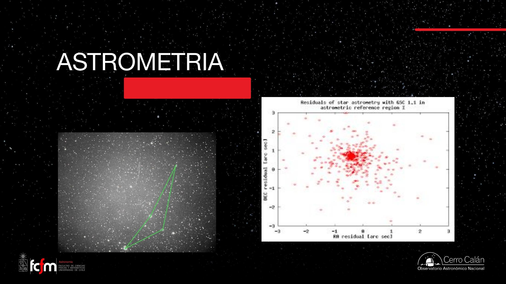
¿Para qué tanta precisión? El ejemplo estelar es el centro de la Vía Láctea. Durante los 2000 se midieron con astrometría las órbitas de estrellas alrededor de la radiofuente Sagitario A*. Una de ellas pasó muy cerca y muy rápido, restringiendo tanto la masa dentro de tan poco espacio que no cabe otra cosa que un agujero negro supermasivo. Ese resultado astrométrico dio un Premio Nobel (Ghez y Genzel, 2020 — atribución externa para contexto).
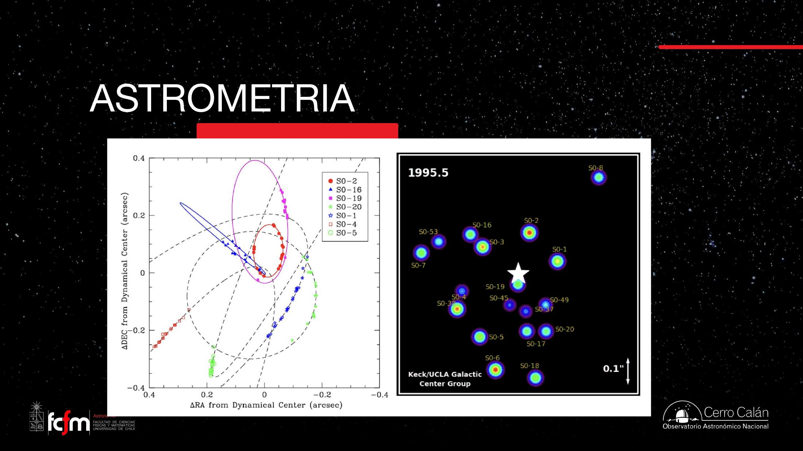
Atmósfera y airmass
La atmósfera absorbe, enrojece y limita lo que vemos. El airmass cuantifica cuánta atravesamos.
La atmósfera no es transparente a toda la luz. Hay ventanas: el visible y el radio pasan razonablemente; gran parte del infrarrojo, el UV, los rayos X y gamma quedan bloqueados (por eso se observan desde el espacio). Esto define qué se puede hacer desde la Tierra y qué exige satélites.
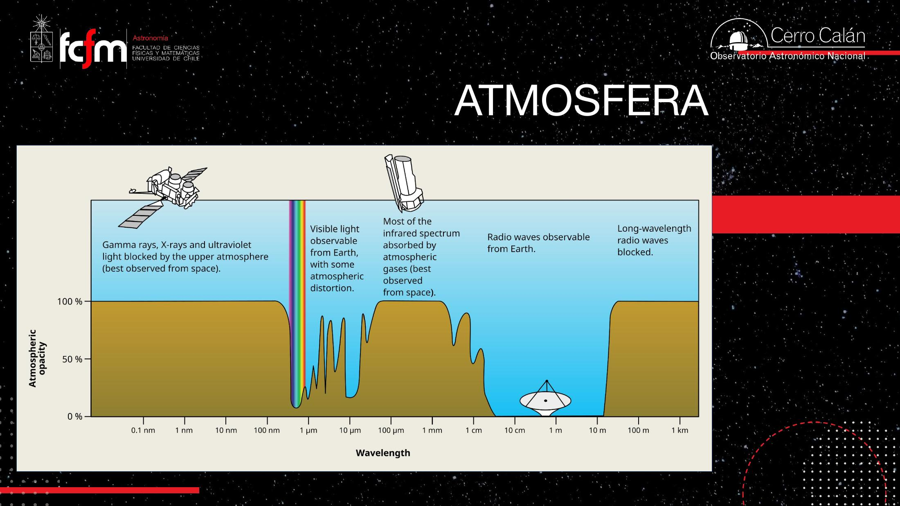
Incluso dentro de una ventana, cuanto más bajo en el cielo miras, más atmósfera atraviesas. El airmass mide cuántas veces el espesor atmosférico del cenit atraviesa la línea de visión. Para una atmósfera plana-paralela:
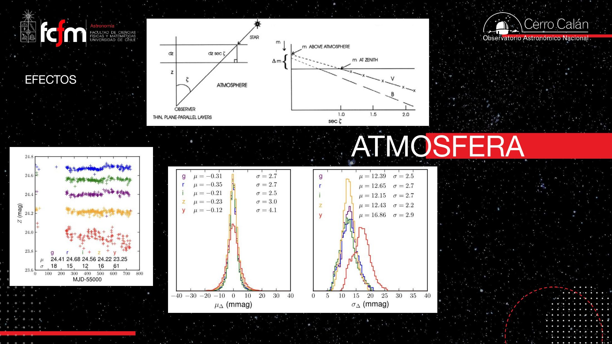
El hilo conductor de toda la clase: medir es contar fotones, y contar fotones es estadística. De ahí salen el ruido , la SNR que crece como , y el criterio de los 5σ para creer un descubrimiento. Reducir (bias/flat), calibrar (flujo, longitud de onda), hacer espectroscopía y astrometría, y corregir la atmósfera (airmass) son los pasos que convierten voltajes ruidosos en ciencia confiable. Próxima clase: una experiencia observacional real con el telescopio GOTO de Cerro Calán, donde ustedes tomarán, reducirán y buscarán señal en sus propios datos.
Conceptos clave
Tabla de repaso rápido.
| Concepto | Qué es / valor | Por qué importa |
|---|---|---|
| SNR | Señal / ruido | «¿Cuánto le creemos al resultado?»: la pregunta central |
| Método científico | Hipótesis falsificable; TEST = predicción vs. dato | Buscamos estar equivocados; ahí se aprende |
| Bayes | Invierte lo difícil (modelo|datos) por lo fácil (datos|modelo) | |
| Binomial | Eventos sí/no (fotón excita o no) | |
| Poisson | , | Conteo de fotones; eventos raros y numerosos |
| Ruido de Poisson | (shot noise) | Error relativo ; no se puede filtrar |
| SNR vs. tiempo | Duplicar SNR = integrar 4× más | |
| Significancia 5σ | ~1 en 1,7 millones | Umbral para «declarar descubrimiento» |
| Energía del fotón | Convierte cuentas en flujo físico (W/m²) | |
| Eficiencia cuántica | CCD ~90–100 %, ojo << | Fracción de fotones detectados → más SNR |
| Bias | Lectura tapada, 0 s | Offset aditivo; se resta |
| Flat | Pantalla uniforme, fuera de foco | Ganancia por píxel; se divide |
| Estrellas estándar | Magnitud/color conocidos | Calibrar flujo a través de la atmósfera |
| Sistemas de filtros | Johnson-Cousins, SDSS u g r i z | Estandarizados para comparar telescopios |
| Espectroscopía | Slit + grating → espectro | Continuo / absorción / emisión |
| IFU / cubo de datos | (X, Y, λ) | Un espectro por píxel; objetos extendidos |
| Líneas telúricas | Emisión del cielo, λ conocida | Calibrar en longitud de onda |
| Astrometría | Match de triángulos imagen↔catálogo | Órbitas en el centro galáctico → Sgr A* |
| Airmass | Cuánta atmósfera atraviesas: absorción y enrojecimiento |
Exámenes de práctica
10 exámenes de 5 preguntas (3 de alternativas autocorregibles + 2 de respuesta escrita).